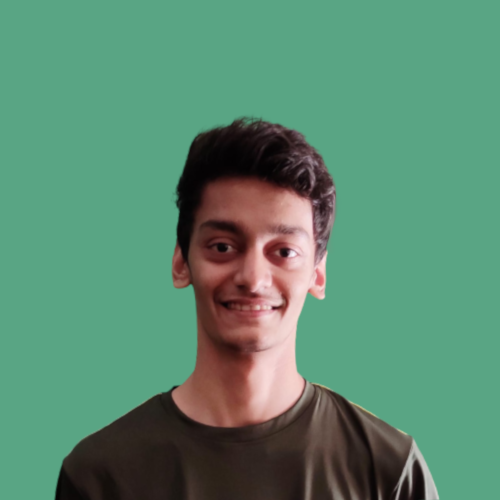

About Me
I want to make things using my skills, that make a difference.
I'm Jai Mulye, a computer engineer living in Mumbai. Currently looking for a job opportunity where I will be able to learn new technologies and broaden my knowledge while contributing to the growth of the organization.
I am a passionate coder who likes to take up challenging tasks and complete them. I am focused on improving my skills as a developer and as a team player.
I enjoy working on personal projects that mostly include creating designs and art. In my free time you can find me playing table tennis, editing videos, playing video games or drawing.
"A bug is never just a mistake. It represents something bigger, an error of thinking that makes you who you are." ~ Elliot Alderson, Mr. Robot
Skills
HTML, CSS, SCSS, Bootstrap, JavaScript, JSON, AJAX, React.js, Python, PHP, MySQL, Git, Gimp, Photoshop, Inkscape, Premiere Pro